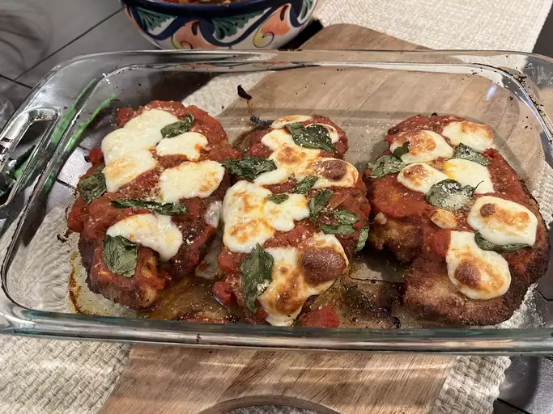

Chicken Parm

Description
Baked chicken with parmesan and bread crumb crust,
topped with marinara sauce and mozzarella cheese.
Total prepare time of 45 minutes. Serves 4.
Ingredients
- 4 skinless, boneless chicken breast halves
- salt and freshly ground black pepper to taste
- 2 large eggs
- 1 cup panko bread crumbs, or more as needed
- ¾ cup grated Parmesan cheese, divided
- 2 Tbsp all-purpose flour, or more if needed
- ½ cup olive oil for frying, or as needed
- ½ cup prepared tomato sauce
- ¼ cup fresh mozzarella, cut into small cubes
- ¼ cup chopped fresh basil
- ½ cup grated provolone cheese
- 2 tsp olive oil
Steps
- Preheat oven to 450° F.
- Pound/flatten chicken to a thickness of 1/2-inch with the smooth
side of a meat mallet.
- Season chicken thoroughly with salt and pepper.Using a sifter or
strainer; sprinkle flour over chicken breasts, evenly coating
both sides.
- Beat eggs in a shallow bowl and set aside.
- Mix bread crumbs and 1/2 cup Parmesan cheese ina separate bowl,
set aside.
- Dip a flour-coated chicken breast in beaten eggs. Transfer breast
to the bread crumb mixture, pressing crumbs into both sides.
Repeat for each breast. Let chicken rest for 10 to 15 minutes.
- Heat 1/2 inch olive oil in a large skillet on medium-high heat
until it begins to shimmer. Cook chicken in the hot oil until
golden, about 2 minutes per side. The chicken will finish
cooking in the oven.
- Transfer chicken to a baking dish. Top each breast with 2 tablespoons
tomato sauce. Layer each chicken breast with equal amounts of
mozzarella cheese, fresh basil, and provolone cheese. Sprinkle
remaining Parmesan over top and drizzle each with 1/2 teaspoon
olive oil.
- Bake in the preheated oven until cheese is browned and bubbly and
chicken breasts are no longer pink in the center, 15 to 20
minutes. An instant-read thermometer inserted into the center
should read at least 165 degrees F (74 degrees C).